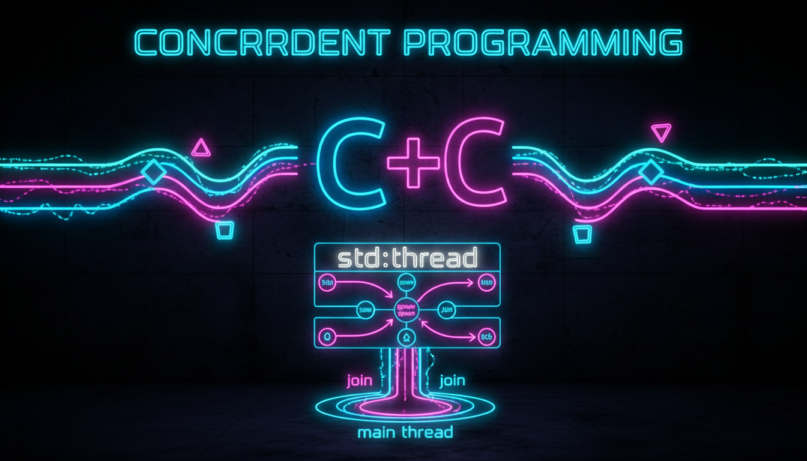

std::thread, створення потоків, join, detach

C++11 надає стандартну бібліотеку для багатопоточного програмування.
#include <iostream>
#include <thread>
#include <vector>
void sayHello() {
std::cout << "Привіт з потоку!" << std::endl;
}
void printNumbers(int start, int end) {
for (int i = start; i <= end; i++) {
std::cout << i << " ";
}
std::cout << std::endl;
}
int main() {
// Потік з функцією
std::thread t1(sayHello);
t1.join(); // Чекаємо завершення
// Потік з параметрами
std::thread t2(printNumbers, 1, 10);
t2.join();
// Потік з лямбда
int result = 0;
std::thread t3([&result]() {
for (int i = 1; i <= 100; i++) {
result += i;
}
});
t3.join();
std::cout << "Сума 1..100 = " << result << std::endl;
// Кілька потоків
std::vector<std::thread> threads;
for (int i = 0; i < 5; i++) {
threads.emplace_back([i]() {
std::cout << "Потік " << i << " працює" << std::endl;
});
}
for (auto& t : threads) {
t.join();
}
return 0;
}